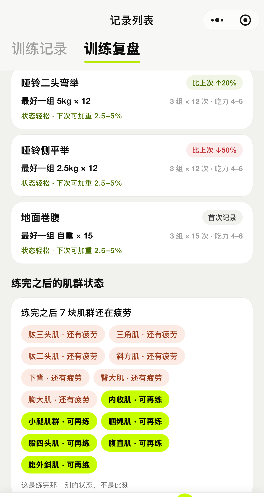

SCIENCE · 健身科普
练完第二天疼，是乳酸堆积？
第二天才来的酸痛， 不是坏事
它是在通知你修复进度
延迟性肌肉酸痛 · 恢复节奏 · 练与歇
衡砺健身记录 · 健身科普系列
📦 3 Parts + Conclusion
👉 滑动
PART 01
乳酸不背锅
酸痛从哪来
PART 02
练还是歇
恢复节奏
PART 03
衡砺怎么帮
肌群状态
PART ///
写在最后
来用用看
酸痛不是成绩单，是身体在汇报修复进度。
大家好，我是衡砺健身记录的开发者。这是健身科普系列的第四篇——前几篇讲了动作怎么记、热量怎么算，这篇讲一个几乎人人都遇过的体验：练完当天好好的，第二天早上起床，疼了。
下楼梯扶栏杆、抬手穿衣服龇牙咧嘴——这种「迟到的疼」有名字，叫延迟性肌肉酸痛（DOMS）。为什么它总是迟到？疼的时候到底该练还是该歇？一篇讲清。
01
PART
乳酸不背锅
MYTH BUSTED · 酸痛从哪来
很多人从小听到大的解释是：「乳酸堆积，第二天就疼」。这个说法流行了半个多世纪，但乳酸已经洗清嫌疑很多年了——运动中产生的乳酸，在运动结束后一两个小时内就被身体代谢得七七八八，根本撑不到第二天早上。
目前主流的解释是：以离心收缩为主的运动（比如下放重量的那半程、下坡跑），会让肌纤维和周围的结缔组织出现一些细微损伤。身体随后启动炎症修复流程——正是这套流程让你在 12～24 小时后开始感到酸痛，24～72 小时达到高峰，通常三到七天消退。
第二天才痛，不是伤得更重，是修复赶到需要时间。
三个信号说明你更容易中招：新动作、突然加量、离心拉长阶段。久没练的人第一次练腿，两天后下楼梯的酸爽，多半就是这三条全占了。
还有个好消息叫重复训练效应：同样的动作再来一次，酸痛会明显减轻——身体学得很快，这是它在适应，不是你练得不够狠。
02
PART
练还是歇
RECOVERY · 恢复节奏
先说结论：轻中度酸痛不必停练，但值得聪明地练。酸痛的部位降重量、减组数没问题；更好的选择是换个部位——腿酸就练上肢推，胸酸就练背，让修复中的肌群歇着。
想让身体好受一点，按证据强度排个序：睡够、吃够蛋白质、喝够水是三件最扎实的事；泡沫轴和按摩能带来短期的舒适感；至于拉伸——预防酸痛的证据一直偏弱，疼着硬拉不如轻轻活动。「排酸跑」排的其实不是酸，是低强度活动带来的血液循环。
⚠️ 什么时候该看医生：疼痛集中在关节而不是肌肉、是尖锐刺痛或只有单侧、超过一周不减轻、尿液颜色明显变深——出现任何一条，别硬扛，及时就医。本文是训练科普，不构成医疗建议。
最后纠正一个心态：酸痛的轻重和练得好不好，没有必然关系。它受动作熟悉度、离心占比、当天状态影响很多——拿它当成绩单，会逼着你追求「练到疼」，那才是真正的弯路。
03
PART
衡砺怎么帮
IN APP · 肌群状态
「酸痛期换部位练」这个策略，前提是你知道哪些肌群正在修复、哪些已经歇够了。这正是衡砺在做的事：
复盘页的肌群状态
每次练完，衡砺会按你近三周的训练记录，给每个主要肌群估一个状态——刚练过的在恢复、歇久了的在消退。酸痛期打开看一眼，绿着的部位就是今天可以练的。人体图上哪儿亮了、哪儿暗了，一眼扫完。
逐组记录 + RPE
酸痛期降强度练，也照样记：每组重量、次数，再加一个 1～10 的主观强度（RPE）。下周身体缓过来，对照着往回加，不用凭感觉猜。
一周一报，看趋势不看单日
1.1.0 新增的训练周报会把这一周收成一张卡：目标达成、和上周比、真 PR 才挂标——身体的状态有起伏，看一周的趋势就好，别被单日的感觉带着走。

复盘页：练完那一刻，哪些肌群还在疲劳、哪些可再练
///
LAST
写在最后
TAKEAWAY · 来用用看
带走三句话：延迟的疼是修复在赶工，不是乳酸；轻中度酸痛可以换部位练；看一周的趋势，不看单日的酸痛。
在微信里搜索「衡砺健身记录」，或扫描下面的小程序码，把这套记录工具装进微信。

下一篇科普想看什么——练前热身、蛋白质怎么吃、还是平台期怎么破？评论区说了算。用下来有任何想吐槽或想要的功能，也欢迎留言——独立开发，反馈就是最快的迭代。
我是衡砺健身记录，一个把健身工具做轻的小程序。我们下篇见。
既然看到这里了，如果觉得有用，随手点个赞、在看、转发三连吧。
THANKS FOR READING